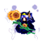
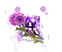
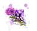

- Welcome to Touhou Wiki!
- Please register to edit. For assistance, check in with our Discord server or IRC channel.
Sunflower Fairy
| The title of this article is unofficial; an official name hasn't been found, so it's been given a fitting title by the editors of this wiki for amenity, either from a popular fan-name or a mere description of the topic. If an official name appears, then it should be moved to the official name. |
| ひまわり Sunflower Fairy | |
|---|---|
  Sprites of the Sunflower Fairy from various games
| |
| Species | |
| Location |
Anywhere in Gensokyo |
Appearances | |
| Official Games | |
| |
| Print Works | |
| |
The Sunflower Fairy (ひまわり妖精 Himawari yōsei) are sub-group of fairies who are a common stage enemy in various Touhou Project games, only in danmaku shooting games. They're one of the most notable and used generic enemies in the Touhou Project.
Character Design[edit]
Name[edit]
Because their name was originally unknown, the fans named this type of fairy the Sunflower Fairy (ひまわり妖精 Himawari Yousei) since they hold a sunflower in their hands. In Chapter 8 of Visionary Fairies in Shrine, an almost identical descriptive name, Sunflower Fairies (ひまわりの妖精 Himawari no Yousei), was used by Luna Child when referring to these fairies.
Appearance[edit]
The main appearance of the fairy is where it has short red hair, (possibly) orange cherry hair pins and a long pony tail. Large slightly pinkish wings and a dress. And she holds two large sunflowers.
Past Appearance[edit]
Other versions of the fairy exist in different colours. In Phantasmagoria of Flower View she had instead of red hair, light blue hair and white wings. In the same game when the heroine is in Muenzuka the fairy wears a dark blue dress and a blue hat with a gold emblem in front. ZUN said that the fairies where cosplaying as the yama in the stage. [Ref. Needed]
In Undefined Fantastic Object a version of this fairy was mainly purple, with purple hair and purple hair pins. The sunflowers are also purple and the wings and dress are also slightly purple. The Makai version has short black hair with (possibly) red cherry hair pins and a long pony tail. And wears a pure white dress and holds 2 large sunflowers which has a black stem with black petals and red seeds. Also the fairy has large black wings with red markings that appear to be similar to Shinki's.
Story[edit]
They are generic enemies in Windows.
Fandom[edit]
Official Sources[edit]
- 2005/08/14 Phantasmagoria of Flower View
- 2007/08/17 Mountain of Faith
- 2008/08/16 Subterranean Animism - Stages 1 and 4; Extra Stage
- 2009/08/15 Undefined Fantastic Object
- 2010/08/14 Fairy Wars
- 2011/08/13 Ten Desires Stages 3-6; Extra Stage